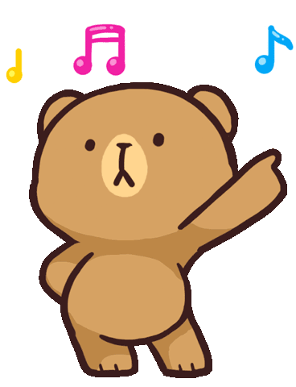

Hey there, Mimi! Mocha Bear here! Milky told me you were stopping by today! How's Honolulu? We should go to Koko Head together someday! And eat chow fun from Panda Express! And oh, oh, poke from Foodland too!
Oh, what's that Milk? Am I getting too distracted? Sorry about that...ahem. Let's start over.
Hey there, Mimi! Mocha Bear here. We brought you here today because we need YOUR help! Jesse left us a treasure to solve, but we are a bit stuck. Since you're his girlfriend, we thought, you know, maybe you'd be able to help us out...Anyways, come give it a try!
Click on the button below when you're ready!